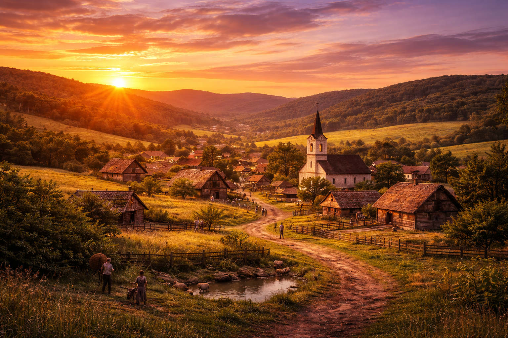

Csillagmező község a történelmi Bereg vármegye területén, a Tiszahát peremvidékén fekszik. A települést körülölelő sík és enyhén hullámzó mezők, valamint a közeli erdősávok már a középkorban is kedvező feltételeket biztosítottak a megtelepedéshez. A vidék jó termőföldje és viszonylagos elszigeteltsége hosszú időn át meghatározta a falu fejlődését.
A helyi hagyomány szerint Csillagmező a 13. század második felében, a tatárjárást követő újratelepítések idején jött létre. Az első lakók magyar és ruszin eredetű családok voltak, akik állattartással, földműveléssel és erdőhasználattal foglalkoztak. A település neve egy régi, szájhagyomány útján fennmaradt történetre vezethető vissza, mely szerint az alapítók egy különösen tiszta, csillagfényes éjszakán érkeztek a falu határába, és a látványt jó jelnek tekintették.
Írásos forrásokban Csillagmező neve csak később bukkan fel, ami a korszakra jellemző: a kisebb falvak gyakran csak adóösszeírásokban, egyházi iratokban szerepelnek. A település kezdetben nem tartozott a jelentősebb birtokközpontok közé, lakossága néhány tucat főből állhatott.
A 15–16. század során Csillagmező sorsa hasonlóan alakult a környező beregi falvakéhoz. A lakosság száma lassan gyarapodott, de a járványok, természeti csapások és portyázások időről időre visszavetették a fejlődést. A falu több alkalommal részben vagy teljesen elnéptelenedett, majd újratelepült.
A török hódoltság idején Csillagmező a hadjáratoktól többnyire megkímélve maradt, azonban a lakosok adóterhei megnövekedtek. A falu jobbágyai a földesúri kötelezettségek mellett igyekeztek fenntartani gazdaságaikat, elsősorban gabonatermesztéssel és állattartással.
A 16. század közepétől a térség történetét – így Csillagmező sorsát is – jelentősen befolyásolta az Oszmán Birodalom előrenyomulása. Bár Bereg megye nem tartozott a hódoltság központi területei közé, a folyamatos hadjáratok, adóztatások és portyázások komoly terheket róttak a falura. A lakosság száma megfogyatkozott, több család elmenekült, a művelt földek egy része parlagon maradt. A templom és a lakóházak egy része megrongálódott, az élet hosszú időre bizonytalanná vált.
A 17. század végére, a török uralom megszűnésével fokozatosan megindult az újjáépítés. Csillagmező lassan újra benépesült, részben visszatérő régi családok, részben új betelepülők révén. A falu lakói elsősorban földműveléssel és állattartással foglalkoztak, kihasználva a környék termékeny domboldalait és rétjeit. A település szerkezete ekkor alakult ki véglegesen: a házak a patak mentén és a főbb földutak vonalán sorakoztak.
A 18. században Csillagmező a Habsburg Birodalom részeként viszonylagos békés fejlődési időszakot élt meg. A földesúri birtokrendszer meghatározta a falu életét, ugyanakkor a lakosság gyarapodott, új házak épültek, a templomot több alkalommal is bővítették és felújították. A közösségi élet központja a templom és a hozzá kapcsolódó ünnepek voltak, amelyek évszázadokon át meghatározták a falu ritmusát.
A 19. században a jobbágyfelszabadítás és a polgári átalakulás hatására Csillagmező lakói fokozatosan önállóbb gazdálkodásba kezdtek. Megjelentek a kisbirtokos parasztcsaládok, a földművelés mellett kézműves mesterségek is kialakultak. A század végére a falu már rendezett utcákkal, iskolával és működő egyházi közösséggel rendelkezett.
Az első világháború és az azt követő politikai változások mély nyomot hagytak Csillagmező történetében. A trianoni döntés következtében a falu közigazgatási hovatartozása megváltozott, ami gazdasági és társadalmi nehézségekkel járt. A két világháború közötti időszakban a lakosság elsősorban a hagyományos mezőgazdaságból élt, miközben sokan kényszerültek elvándorlásra.
A második világháborút követő évtizedek újabb kihívásokat hoztak. Az államosítás és a kollektivizálás átalakította a falu gazdasági szerkezetét, ugyanakkor Csillagmező közössége megőrizte hagyományait és összetartását. A 20. század végére a település fokozatosan alkalmazkodott a megváltozott körülményekhez.

Napjainkban Csillagmező múltja és jelene szorosan összefonódik. A falu lakói büszkék történelmükre, amely a nehéz időszakok ellenére is a megmaradásról és az újjáépítésről szól. A település arculatát ma is meghatározza a történelmi örökség, a természeti környezet és az a közösségi szellem, amely generációkon át fennmaradt.